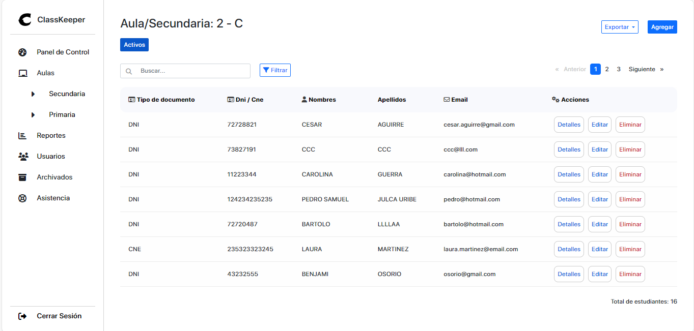
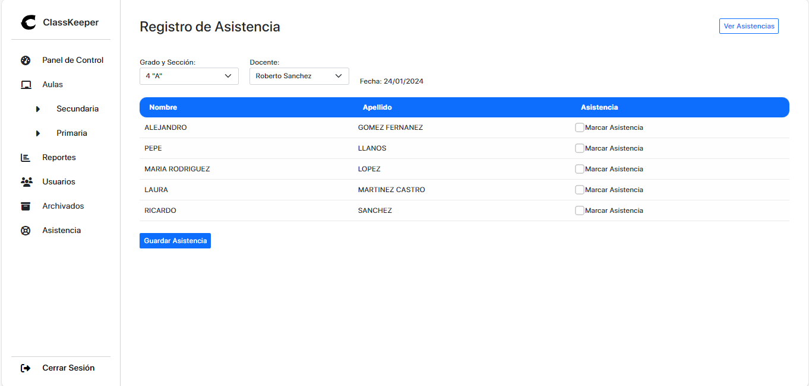
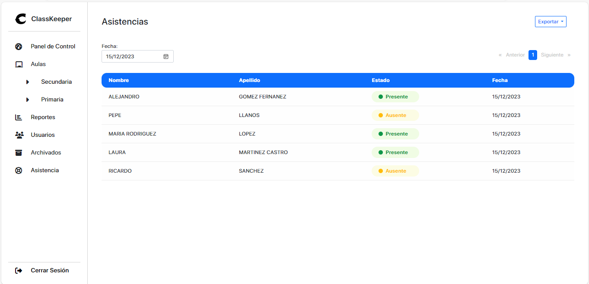
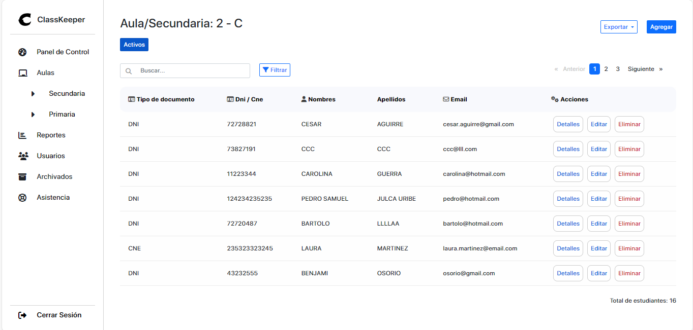
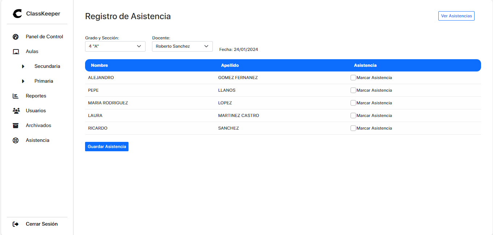
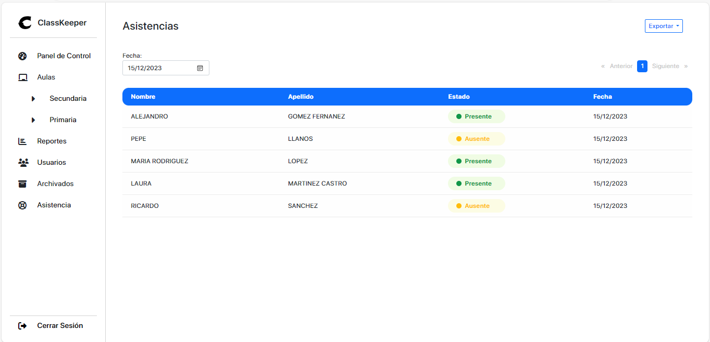

Hola👋 Soy
ROBERTO CARLOS
FRONTEND DEVELOPER
ABOUT ME
¡Hola! Soy Roberto Carlos, un apasionado desarrollador frontend con 19 años de edad. Actualmente, me encuentro en el emocionante viaje de explorar y aprender en el mundo del desarrollo web.
Actualmente, estoy comprometido con mi educación y continuamente busco nuevas oportunidades para aprender y mejorar. Estoy emocionado de crecer en mi carrera y de explorar nuevas tecnologías que me permitan llevar mis habilidades al siguiente nivel.
Mi objetivo es contribuir al mundo del desarrollo web mediante la creación de soluciones elegantes y funcionales que mejoren la experiencia del usuario. Estoy entusiasmado por enfrentar nuevos desafíos y aprender de cada oportunidad que se presente.
PROYECTS
ToDoList
Este proyecto es una aplicación de lista de tareas desarrollada con Angular, una potente plataforma de desarrollo de aplicaciones web. La aplicación permite a los usuarios agregar, marcar como completas y eliminar tareas, proporcionando una experiencia de usuario intuitiva y eficiente.
Sistema de Registro de Asistencia
Un Sistema de Registro de Asistencia, desarrollado con tecnologías Full Stack. Utiliza Java Spring Boot para el backend, Angular para el frontend y cuenta con una base de datos Oracle en la nube. Este proyecto proporciona una solución robusta y elegante para el seguimiento preciso de la asistencia.
 




